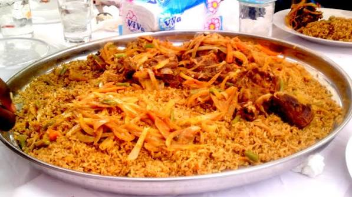

RIZ GRAS
Description
Un plat national de riz mijoté dans une sauce
riche à base de tomates, de viande et de légumes.
les differentes etapes pour sa preparation
- Saisir la viande dans l'huile chaude
- Faire rissoler les oignons et la tomate
- Verser l'eau et laisser bouillir
- Ajouter le riz lavé dans le bouillon
- Cuire à l'étouffée à feu doux
les differents condiments durant saa preparation
- Farine de haricot niébé (300 g)
- Feuilles d'oseille ou d'épinards (1 botte)
- Potasse (1 pincée)
- Eau (200 ml)
- Sel